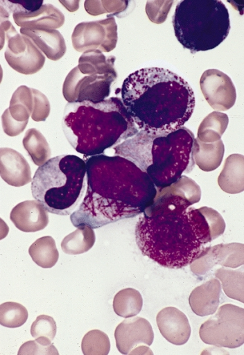

아우어소체 (Auer Rod)

쉽게 풀면
정상 세포에서는 볼 수 없는, 오직 특정 백혈병 세포에서만 나타나는 가늘고 붉은 막대 모양의 구조물이다. 세포 안의 과립 성분이 비정상적으로 뭉쳐 만들어지며, 여러 개가 다발로 뭉쳐 있으면 장작더미처럼 보이기도 한다.
왜 중요한가
급성백혈병 환자의 골수나 말초혈액 도말에서 관찰되면 골수구계 기원임을 시사해 급성림프모구백혈병과의 감별에 중요한 단서로 활용된다. 백혈병 진단 초기, 유세포분석이나 유전자검사 결과가 나오기 전 응급실이나 병동에서 도말을 직접 보고 골수구계 백혈병 가능성을 빠르게 판단할 수 있어 초기 치료 방향을 정하는 데 실질적으로 활용된다. 형태만으로 세부 아형을 완전히 구분할 수는 없지만, 아우어소체 존재 여부는 치료제 선택 전 첫 단서로 활용되어 이후 확진검사의 방향을 정하는 데 실질적으로 기여한다.
어디에 있고 어떻게 생겼나
- 아우어소체는 골수계 모세포의 세포질에서 보이는 크고 결정 모양의 봉입체이다. 아주친화성(azurophilic)으로 염색된다.
- 융합한 리소좀으로 이루어져 있고 리소좀 효소가 풍부하다.
- 모양은 바늘, 쉼표, 마름모, 직사각형, 코르크 마개뽑이 모양일 수 있고 드물게 과립 모양도 있다.
- 급성 골수성 백혈병, 급성 전골수구성 백혈병, 고위험 골수형성이상증후군, 골수증식성 질환에서 나타난다.
맡은 기능
- 세포가 정상적으로 맡은 기능이 있는 구조가 아니라 병적 봉입체이므로 진단 단서로 쓰인다.
- 급성 골수성 백혈병에서 이 소체가 보이면 진단이 매우 유력하다. 그러나 단독으로 확진하는 근거는 아니며, 확진에는 골수 흡인과 생검이 필요하다.
- WHO 기준으로 혈액이나 골수에서 모세포가 20퍼센트를 넘어야 하며(세 가지 재발성 유전 이상은 예외), 예전 FAB 체계는 30퍼센트 이상을 요구했다.
- 급성 골수성 백혈병과 급성 림프모구 백혈병의 감별에는 광학현미경, 유세포분석, 골수과산화효소나 수단 블랙 염색이 쓰이고, 그중 골수과산화효소나 수단 블랙 염색이 가장 유용하다. 골수과산화효소는 호중구의 아주친화성 과립에 저장되는 효소이다.
연구에서 다루는 방식
- 명칭의 유래: 미국 생리학자 John Auer의 이름을 땄지만 캐나다 의사 Thomas McCrae가 1905년 존스홉킨스 병원에서 먼저 기술했다. Auer는 1906년 논문에서 이를 인정했다. 두 사람 모두 이 소체가 든 세포를 림프모세포로 잘못 생각했다.
- 급성 전골수구성 백혈병(APL): 치료 가능성이 높고 별도의 치료가 필요하므로 빠르게 확인하거나 배제하는 것이 중요하며, t(15;17) 전좌를 FISH로 확인한다.
- 보고할 때: 형태 소견(소체의 유무와 개수)은 세포화학염색과 유세포분석 등 다른 검사와 함께 기술한다. 소체가 보이지 않는다고 해서 골수성 백혈병을 배제할 수는 없다.
논문에서는 이렇게 쓰입니다
실제 논문에서
국내 학술지 논문에서 이 용어가 쓰인 문장을 그대로 옮겼다. 제목·학술지·연도와 원문 링크를 함께 적었다.
“골수검사상 불규칙한 핵과 호염기구양 과립, 공포를 함유한 골수아세포와 전골수구의 증가를 볼 수 있었고, 세포질 내 공포도 관찰되었으나, Auer rod는 관찰되지 않았다.”
호염기구양 과립을 함유한 급성전골수구성백혈병 1예, Blood Research, 2005 · KCI 한국학술지인용색인 · 원문 보기 ↗
예시 문장
아래 예문은 용어의 쓰임을 보이려고 만든 것으로, 실제 논문 문장이 아니다.
특징적인 세포 내 구조물이 여러 개 관찰되어 특정 유형의 급성백혈병을 의심했다는 내용이다.
여러 개의 아우어소체가 다발로 모여 장작단(faggot) 모양을 이루는 특정 백혈병 아형의 대표 소견을 설명한 문장이다.
조금 더 깊게 보면
이 소견이 관찰되지 않는다고 해서 급성골수성백혈병을 배제할 수는 없으며, 최종 아형 분류는 세포화학염색과 면역표현형검사 등을 종합해 이루어진다. 아우어소체는 골수과산화효소(myeloperoxidase) 염색에 양성으로 반응해, 세포화학염색을 통해 그 정체를 재확인할 수 있으며 급성전골수구성백혈병(APL)에서 다발성으로 관찰되는 형태는 특히 진단적 가치가 크다.
주의할 점
아우어소체가 관찰되면 골수구계 백혈병으로 사실상 확정할 수 있는 매우 특이적인 소견으로 간주된다. 다만 관찰되지 않는다고 골수구계 백혈병을 배제할 수는 없으므로, 음성 소견을 확진 배제 근거로 삼아서는 안 된다.
아우어소체는 골수계 모세포와 급성전골수구백혈병의 이상 전골수구 세포질에서 나타나며 림프모구에서는 관찰되지 않으므로, 이 구조물 유무 자체가 골수구계와 림프구계를 가르는 중요한 형태학적 단서로 활용된다.
참고 문헌
- Wikipedia contributors. (n.d.). Auer rod. Wikipedia.
- Wikipedia contributors. (n.d.). Acute myeloid leukemia. Wikipedia.
- Wikipedia contributors. (n.d.). Myeloperoxidase. Wikipedia.